📖 About
Windows System Recovery Tool — консольная программа для Windows 10/11, которая восстанавливает и проверяет целостность системных файлов через прямые вызовы Windows API (dismapi.dll, sfc.dll, wintrust.dll и др.), а не через внешние команды cmd.exe / dism.exe / sfc.exe.
Windows System Recovery Tool is a console application for Windows 10/11 that recovers and verifies the integrity of system files through direct Windows API calls (dismapi.dll, sfc.dll, wintrust.dll, etc.) — not through external commands cmd.exe / dism.exe / sfc.exe.
Windows System Recovery Tool 是一款 Windows 10/11 控制台程序，通过直接调用 Windows API（dismapi.dll、sfc.dll、wintrust.dll 等）恢复和验证系统文件完整性 — 而不是通过外部命令 cmd.exe / dism.exe / sfc.exe。
Windows System Recovery Tool ist eine Konsolenanwendung für Windows 10/11, die die Integrität von Systemdateien durch direkte Windows-API-Aufrufe (dismapi.dll, sfc.dll, wintrust.dll usw.) wiederherstellt und überprüft — nicht durch externe Befehle wie cmd.exe / dism.exe / sfc.exe.
Windows System Recovery Tool est une application console pour Windows 10/11 qui récupère et vérifie l'intégrité des fichiers système via des appels directs aux API Windows (dismapi.dll, sfc.dll, wintrust.dll, etc.) — et non via des commandes externes cmd.exe / dism.exe / sfc.exe.
Windows System Recovery Tool es una aplicación de consola para Windows 10/11 que recupera y verifica la integridad de los archivos del sistema a través de llamadas directas a la API de Windows (dismapi.dll, sfc.dll, wintrust.dll, etc.) — no a través de comandos externos cmd.exe / dism.exe / sfc.exe.
Windows System Recovery Tool は、Windows 10/11 向けのコンソールアプリケーションで、外部コマンド cmd.exe / dism.exe / sfc.exe を使わず、Windows API の直接呼び出し（dismapi.dll、sfc.dll、wintrust.dll など）を通じてシステムファイルの整合性を回復・検証します。
Windows System Recovery Tool은 Windows 10/11용 콘솔 응용 프로그램으로, 외부 명령 cmd.exe / dism.exe / sfc.exe를 통하지 않고 직접 Windows API 호출(dismapi.dll, sfc.dll, wintrust.dll 등)을 통해 시스템 파일의 무결성을 복구하고 검증합니다.
Windows System Recovery Tool é um aplicativo de console para Windows 10/11 que recupera e verifica a integridade de arquivos do sistema através de chamadas diretas à API do Windows (dismapi.dll, sfc.dll, wintrust.dll, etc.) — não através de comandos externos cmd.exe / dism.exe / sfc.exe.
✨ Features
67 Operations
Recovery and diagnostics in one menu
17 Native APIs
Win32 APIs via P/Invoke, no shell commands
Tampering Detection
WinVerifyTrust + certificate publisher
Hash Snapshots
SHA256/SHA1 to compare system state
Microsoft.Dism
NuGet wrapper + COM WUA API
9 Languages
RU · EN · ZH · DE · FR · ES · JA · KO · PT
📥 Downloads
Latest release: v2.5.1 — Standalone includes .NET Runtime (no installation required). Compact requires .NET 6 Runtime.
| Architecture | Standalone (includes .NET) | Compact (requires .NET 6) |
|---|---|---|
| x64 (Intel/AMD) | ⬇ Download (~40 MB) | ⬇ Download (~7 MB) |
| x86 (32-bit) | ⬇ Download (~37 MB) | ⬇ Download (~7 MB) |
| ARM64 (Surface/Qualcomm) | ⬇ Download (~33 MB) | ⬇ Download (~6 MB) |
🔐 Verify SHA256
🚀 Quick Start
- Скачайте ZIP для вашей архитектуры (см. таблицу выше)
- Распакуйте
SystemRestoreTool.exe - Правый клик → Запуск от имени администратора
- Используйте меню (67 пунктов, 9 языков)
- Download the ZIP for your architecture (see table above)
- Extract
SystemRestoreTool.exe - Right-click → Run as administrator
- Use the menu (67 items, 9 languages)
- 下载适合您架构的 ZIP（见上表）
- 解压
SystemRestoreTool.exe - 右键 → 以管理员身份运行
- 使用菜单（67 项，9 种语言）
- Laden Sie die ZIP für Ihre Architektur herunter (siehe Tabelle oben)
- Entpacken Sie
SystemRestoreTool.exe - Rechtsklick → Als Administrator ausführen
- Verwenden Sie das Menü (66 Elemente, 9 Sprachen)
- Téléchargez le ZIP pour votre architecture (voir tableau ci-dessus)
- Extrayez
SystemRestoreTool.exe - Clic droit → Exécuter en tant qu'administrateur
- Utilisez le menu (66 éléments, 9 langues)
- Descargue el ZIP para su arquitectura (ver tabla arriba)
- Extraiga
SystemRestoreTool.exe - Clic derecho → Ejecutar como administrador
- Use el menú (66 elementos, 9 idiomas)
- アーキテクチャに合った ZIP をダウンロード（上の表を参照）
SystemRestoreTool.exeを解凍- 右クリック → 管理者として実行
- メニューを使用（66項目、9言語）
- 아키텍처에 맞는 ZIP 다운로드 (위 표 참조)
SystemRestoreTool.exe압축 해제- 우클릭 → 관리자 권한으로 실행
- 메뉴 사용 (66항목, 9개 언어)
- Baixe o ZIP para sua arquitetura (veja a tabela acima)
- Extraia
SystemRestoreTool.exe - Clique direito → Executar como administrador
- Use o menu (66 itens, 9 idiomas)
Auto modes (CLI)
📸 Screenshots
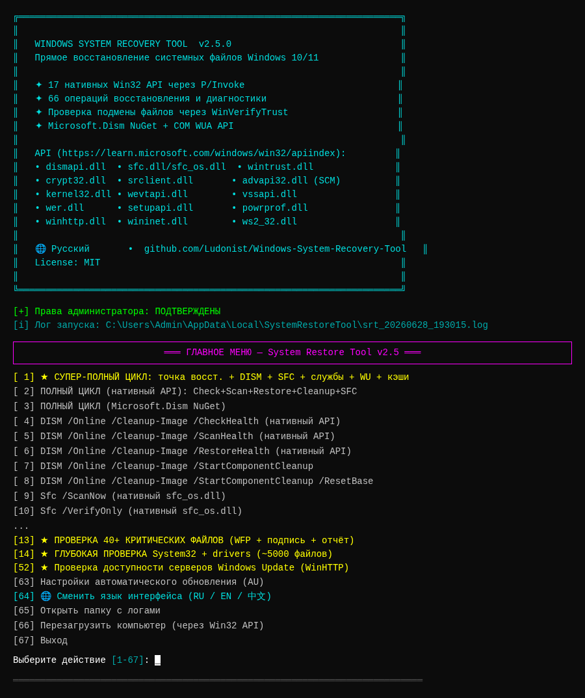
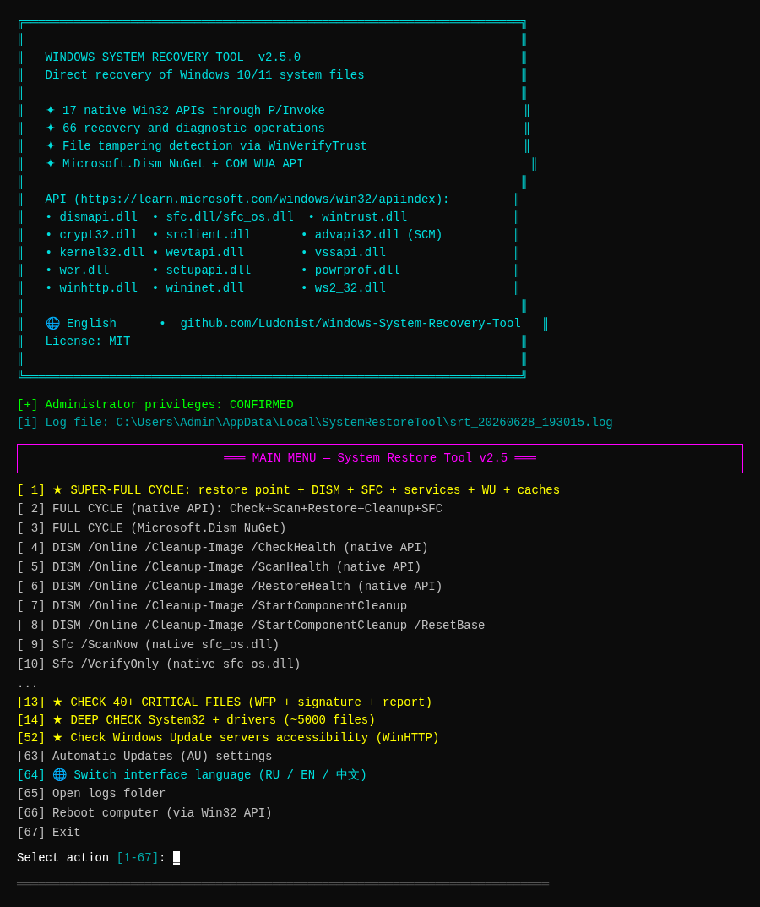
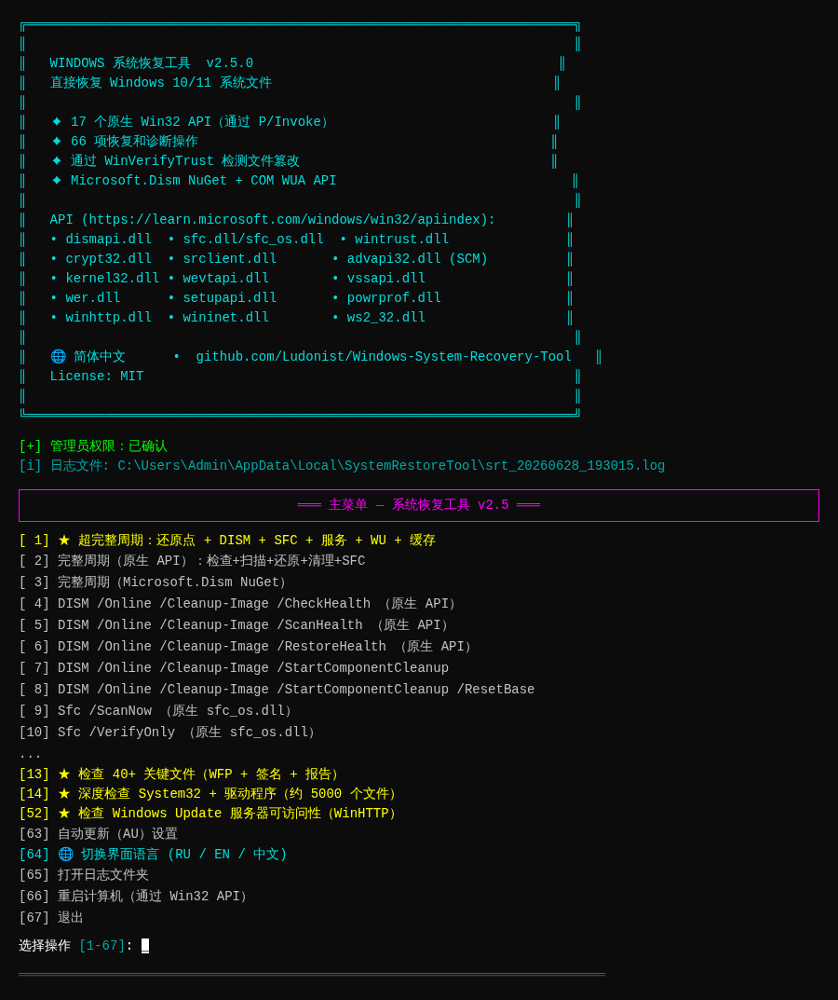
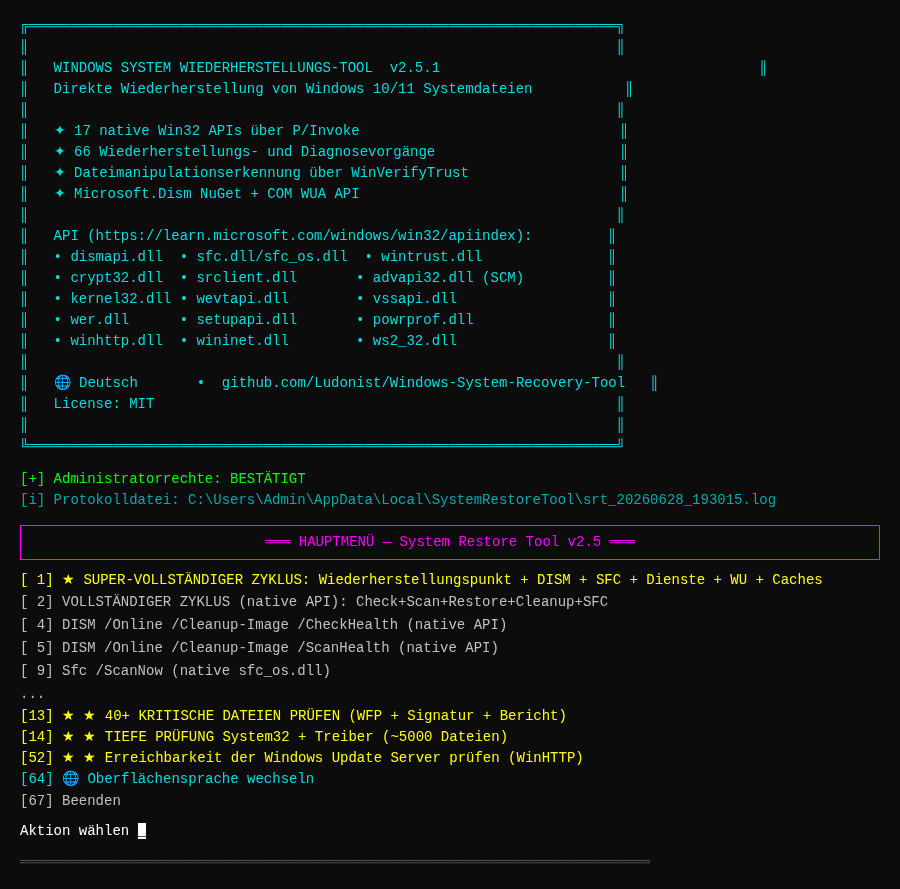
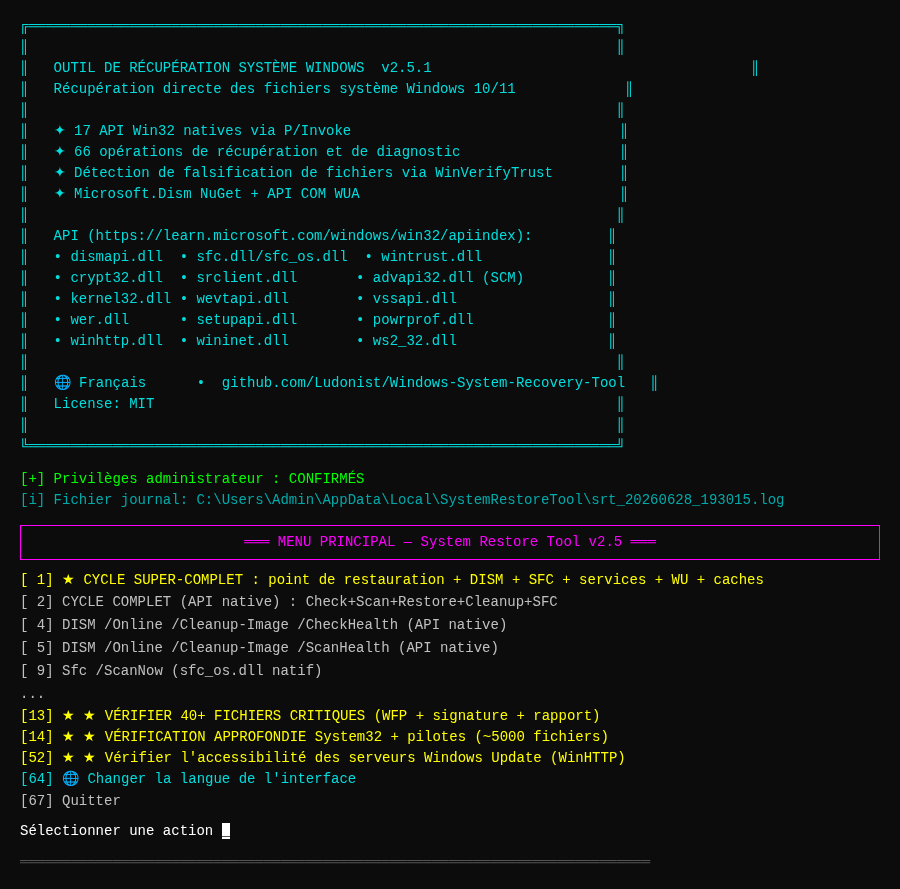
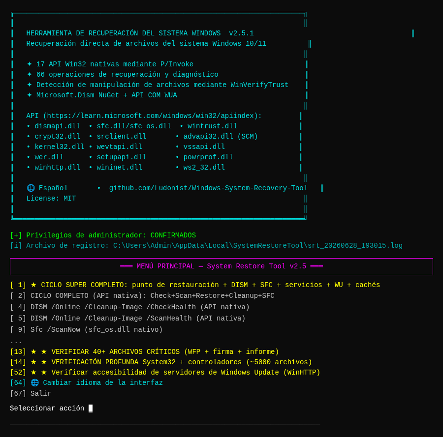
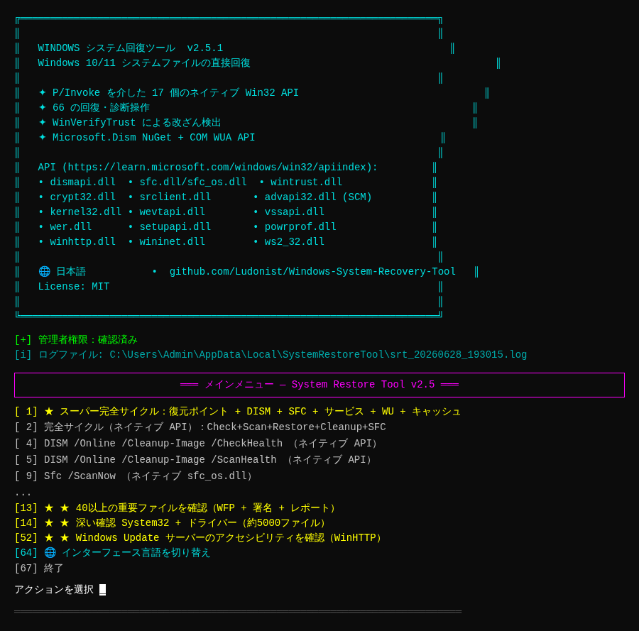
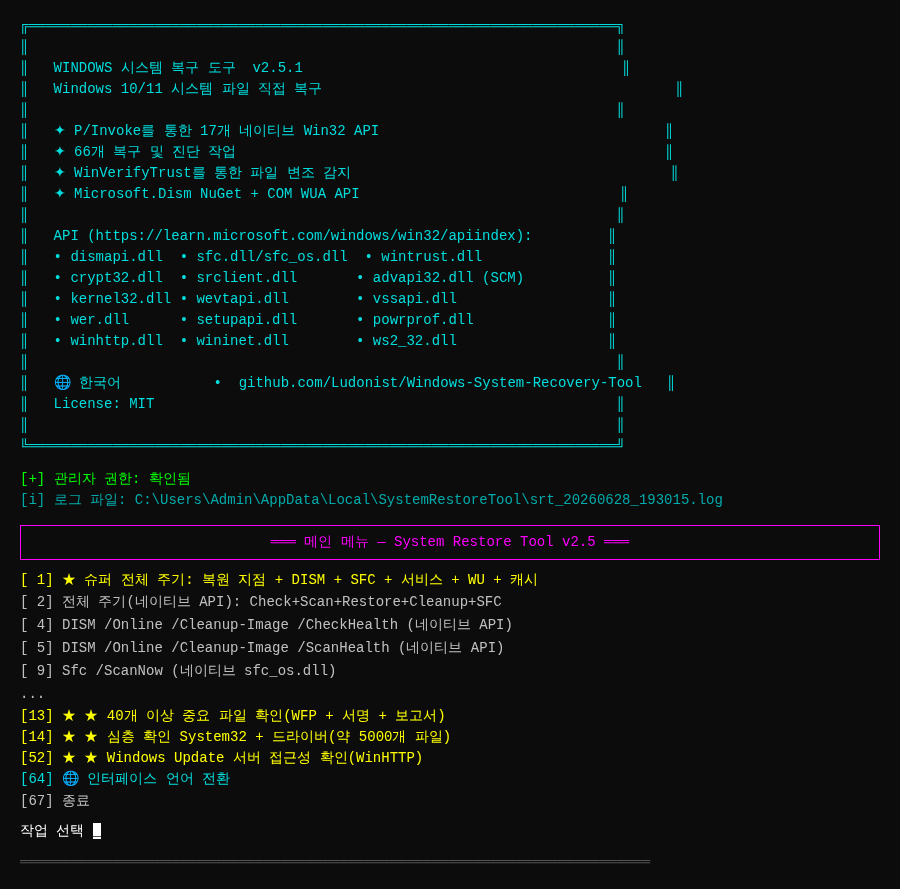
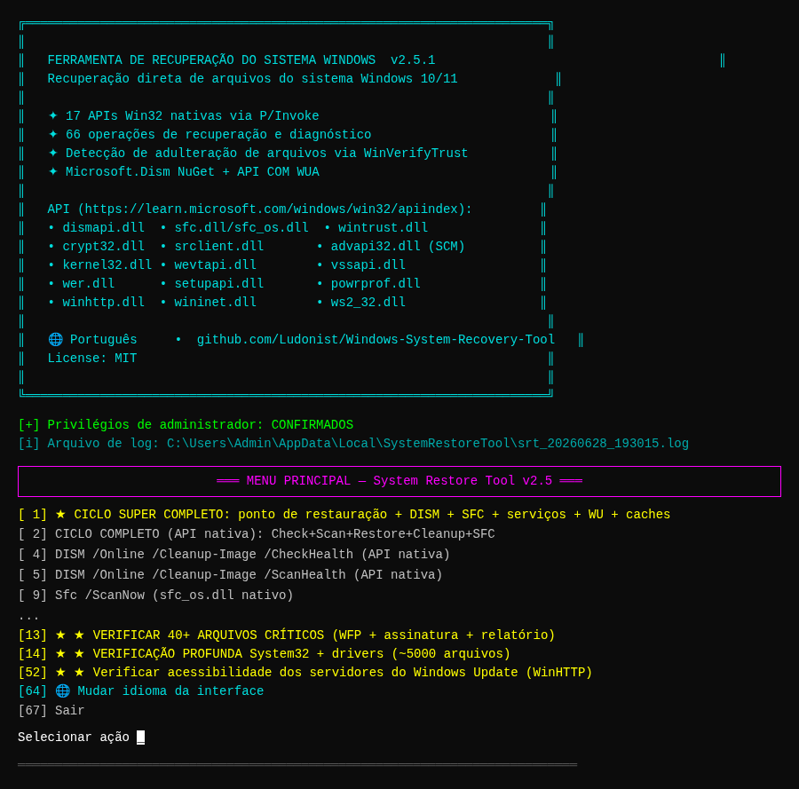
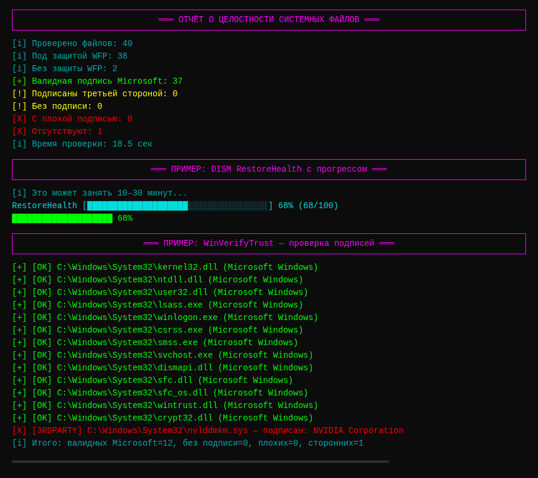
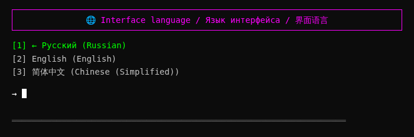
🔌 Win32 APIs Used
All operations use direct P/Invoke calls (no shell commands):
dismapi.dllDISM API
sfc.dll + sfc_os.dllSFC API
wintrust.dllAuthenticode signatures
crypt32.dllCertificate publisher
srclient.dllRestore points
advapi32.dllSCM, registry, privileges
kernel32.dllFiles, reboot, App Recovery
wevtapi.dllEvent logs
vssapi.dllVolume Shadow Copy
wer.dllWindows Error Reporting
setupapi.dllDevices
powrprof.dllPower management
winhttp.dllNetwork diagnostics
Microsoft.Dism NuGetManaged wrapper
COM WUA APIWindows Update Agent